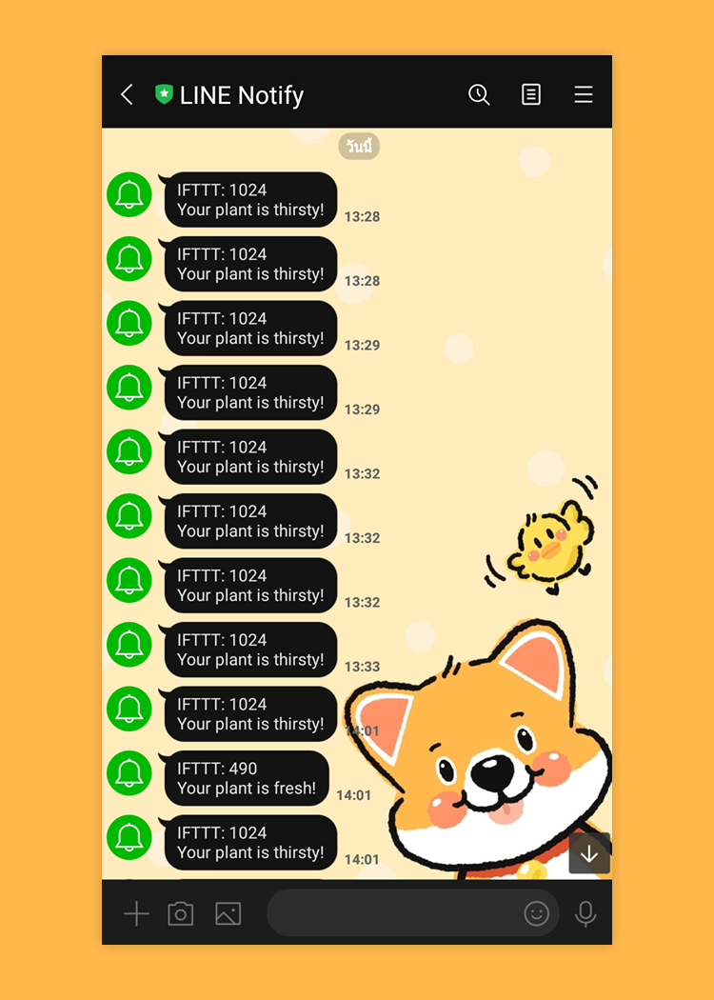

# หลักการทำงาน
Self Watering
Self Watering with LINE Notification
ภาพจำลองการต่อวงจร

Self Watering
เมื่อ Soil Moisture Sensor วัดความชื้นและประมวลผลโดยโมดูลประมวลผล ค่าที่ได้ซึ่งเป็นค่าแบบ Analog จะถูกส่งเข้ามายังคอมพิวเตอร์เพื่อทำการเปรียบเทียบ หากค่าความชื้นที่วัดได้สูงกว่า 750 หมายความว่าดินแห้ง Relay จะมีค่าเป็น LOW ทำให้วงจรปิดและปั๊มน้ำทำงาน เมื่อค่าความชื้นลดลงต่ำกว่า 750 หมายความว่าดินชื้น Relay จะมีค่าเป็น HIGH ทำให้วงจรเปิดและปั๊มหยุดน้ำทำงาน
Self Watering with LINE Notification
เมื่อ Soil Moisture Sensor วัดความชื้นและประมวลผลโดยโมดูลประมวลผล ค่าที่ได้ซึ่งเป็นค่าแบบ Analog จะถูกส่งเข้ามายังคอมพิวเตอร์เพื่อทำการเปรียบเทียบ หากค่าความชื้นที่วัดได้สูงกว่า 750 Line Notification จะทำการแจ้งเตือนว่าดินแห้ง Relay จะมีค่าเป็น LOW ทำให้วงจรปิดและปั๊มน้ำทำงาน เมื่อค่าความชื้นลดลงต่ำกว่า 750 หมายความว่าดินชื้น Relay จะมีค่าเป็น HIGH ทำให้วงจรเปิดและปั๊มหยุดน้ำทำงาน Notification จะทำการแจ้งเตือนว่าดินชื้นแล้ว

CORE DUMP
2/2020 Final Project
Computer Programming